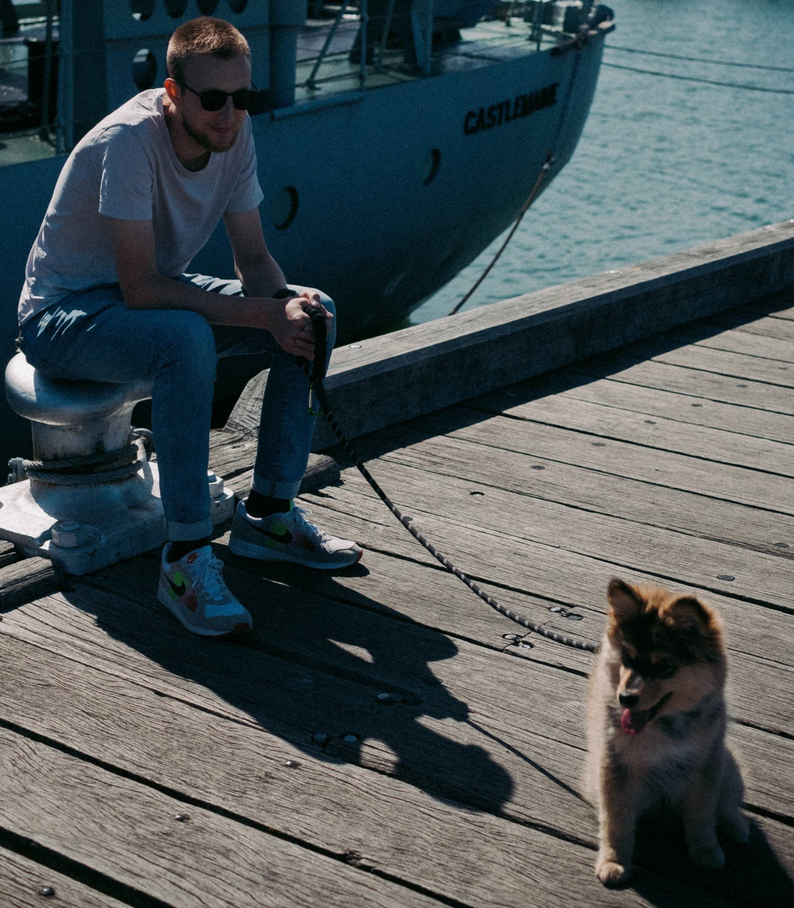

My name is Jordan Wegener and I’m a full stack web developer.
I’m currently studying at Coder Academy on campus in Melbourne. I decided to pivot into the tech industry after beginning a career as a civil engineer. I graduated from UniSA with a Bachelor of Civil Engineering (Hons). Not finding what I was looking for, I decided to build a career around my interests in technology and good design.
My background in engineering gives me a unique advantage over similarly experienced developers with 4 years of intense practice in problem solving. By combining this with my abilities as a developer and an eye for design, I hope to deliver functional and beautiful websites and web apps to future clients.
Outside of web development, I'm an avid guitarist, bassist and drummer and record music at home. I have also been known to enjoy PC games, 4x4ing and photography.
View my resume Me and my puppy Kaiko